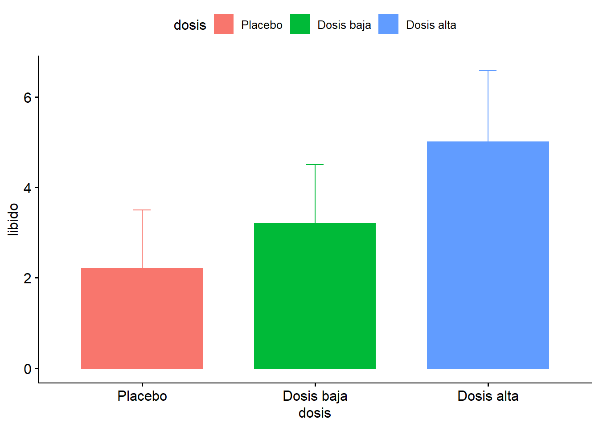
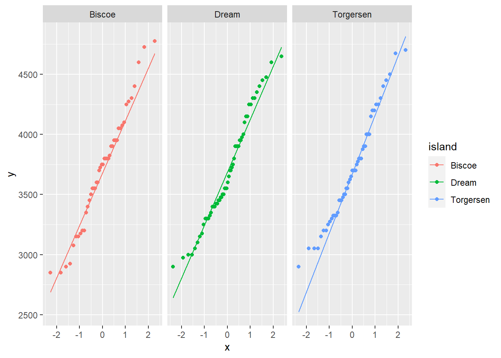
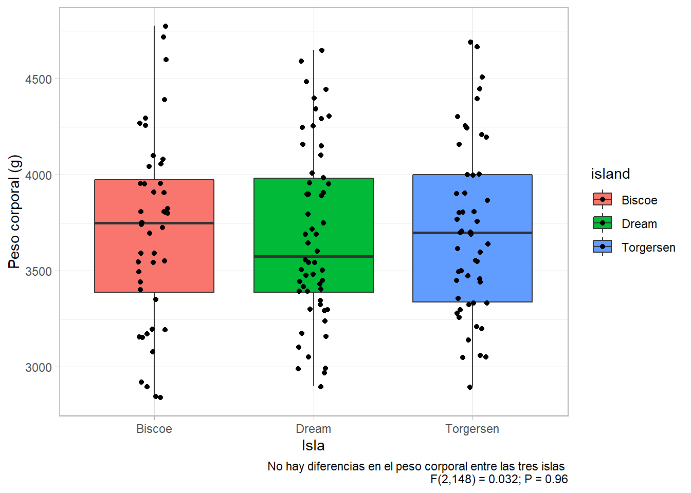

Comparación de dos o mas medias: ANOVA
Miguel Tripp
2021-05-29
Last updated: 2021-08-02
Checks: 7 0
Knit directory: 2021/
This reproducible R Markdown analysis was created with workflowr (version 1.6.2). The Checks tab describes the reproducibility checks that were applied when the results were created. The Past versions tab lists the development history.
Great! Since the R Markdown file has been committed to the Git repository, you know the exact version of the code that produced these results.
Great job! The global environment was empty. Objects defined in the global environment can affect the analysis in your R Markdown file in unknown ways. For reproduciblity it’s best to always run the code in an empty environment.
The command set.seed(20210412) was run prior to running the code in the R Markdown file. Setting a seed ensures that any results that rely on randomness, e.g. subsampling or permutations, are reproducible.
Great job! Recording the operating system, R version, and package versions is critical for reproducibility.
Nice! There were no cached chunks for this analysis, so you can be confident that you successfully produced the results during this run.
Great job! Using relative paths to the files within your workflowr project makes it easier to run your code on other machines.
Great! You are using Git for version control. Tracking code development and connecting the code version to the results is critical for reproducibility.
The results in this page were generated with repository version 2bbf68d. See the Past versions tab to see a history of the changes made to the R Markdown and HTML files.
Note that you need to be careful to ensure that all relevant files for the analysis have been committed to Git prior to generating the results (you can use wflow_publish or wflow_git_commit). workflowr only checks the R Markdown file, but you know if there are other scripts or data files that it depends on. Below is the status of the Git repository when the results were generated:
Ignored files:
Ignored: .Rhistory
Ignored: .Rproj.user/
Ignored: analysis/hero-image.html
Ignored: analysis/poke_logo.png
Untracked files:
Untracked: Curso_Bioestadistica_MTripp_cuatriII.docx
Untracked: Curso_Bioestadistica_MTripp_cuatriII.pdf
Untracked: Diapositivas/
Untracked: Prueba_markdown.Rmd
Untracked: Prueba_markdown.pdf
Untracked: README.html
Untracked: Resources/
Untracked: Tarea_Tstudent.Rmd
Untracked: Tarea_Tstudent.docx
Untracked: Tarea_Tstudent.html
Untracked: Tarea_Tstudent.pdf
Untracked: analysis/Clase13_noParam.Rmd
Untracked: analysis/hero_backgroud.jpg
Untracked: analysis/images/
Untracked: analysis/style.css
Untracked: analysis/test.Rmd
Untracked: code/tarea_macrograd.R
Untracked: data/CS_subset.csv
Untracked: data/Consumo_oxigeno_wide.csv
Untracked: data/Darwin_esp.csv
Untracked: data/Data_enzimas_Experimento1.txt
Untracked: data/Data_enzimas_Experimento2.txt
Untracked: data/Data_enzimas_Experimento3.txt
Untracked: data/Data_enzimas_Experimento4.txt
Untracked: data/DownloadFestival(No Outlier).dat
Untracked: data/Festival.csv
Untracked: data/Hful_metabolitos_ver2.csv
Untracked: data/Longitud_noParam.csv
Untracked: data/LungCapData.txt
Untracked: data/LungCapDataEsp.csv
Untracked: data/PalmerPenguins.csv
Untracked: data/Pokemon_tabla.csv
Untracked: data/Pokemon_tabla.xls
Untracked: data/RExam.dat
Untracked: data/Rexamendat.csv
Untracked: data/Tabla1_Muestreo.txt
Untracked: data/Transcriptome_Anotacion.csv
Untracked: data/Transcriptome_DGE.csv
Untracked: data/Vinogradov_2004_Titanic.tab
Untracked: data/Vinogradov_2004_Titanic.tab.csv
Untracked: data/data_tukey.txt
Untracked: data/exp_macrogard_growth.tab
Untracked: data/exp_macrogard_rna-dna.tab
Untracked: data/fertilizantes_luz.csv
Untracked: data/gatos_sueno.csv
Untracked: data/macrogard_crecimiento.csv
Untracked: data/pokemon_extended.csv
Untracked: output/Plot_all_penguins.pdf
Untracked: output/Plot_all_penguins.tiff
Untracked: output/graficos/
Unstaged changes:
Modified: analysis/_site.yml
Note that any generated files, e.g. HTML, png, CSS, etc., are not included in this status report because it is ok for generated content to have uncommitted changes.
These are the previous versions of the repository in which changes were made to the R Markdown (analysis/Clase8_anova.Rmd) and HTML (docs/Clase8_anova.html) files. If you’ve configured a remote Git repository (see ?wflow_git_remote), click on the hyperlinks in the table below to view the files as they were in that past version.
| File | Version | Author | Date | Message |
|---|---|---|---|---|
| html | c8dbd17 | Miguel Tripp | 2021-08-01 | Build site. |
| html | 5aafed2 | Miguel Tripp | 2021-08-01 | Build site. |
| html | 2bc601a | Miguel Tripp | 2021-07-31 | Build site. |
| Rmd | b4e67dc | Miguel Tripp | 2021-07-31 | workflowr::wflow_publish(c(“analysis/index.Rmd”, “analysis/about.Rmd”, |
| html | 03db7ff | Miguel Tripp | 2021-07-25 | Build site. |
| html | fcb9047 | Miguel Tripp | 2021-07-25 | Build site. |
| Rmd | 9a992a0 | Miguel Tripp | 2021-07-25 | workflowr::wflow_publish(c(“analysis/index.Rmd”, “analysis/about.Rmd”, |
| html | 2adc7a9 | Miguel Tripp | 2021-07-24 | Build site. |
| html | 9d09420 | Miguel Tripp | 2021-07-22 | Build site. |
| html | 0f7eb2d | Miguel Tripp | 2021-07-12 | Build site. |
| html | 82e4deb | Miguel Tripp | 2021-07-08 | Build site. |
| html | bc7c1d7 | Miguel Tripp | 2021-07-07 | Build site. |
| html | 01ac301 | Miguel Tripp | 2021-07-04 | Build site. |
| html | 392444f | Miguel Tripp | 2021-07-04 | Build site. |
| html | c188ae8 | Miguel Tripp | 2021-06-29 | Build site. |
| html | 1136768 | Miguel Tripp | 2021-06-28 | Build site. |
| html | a33d4bb | Miguel Tripp | 2021-06-23 | Build site. |
| html | 209299f | Miguel Tripp | 2021-06-21 | Build site. |
| Rmd | 851d5af | Miguel Tripp | 2021-06-21 | Publish the initial files for myproject |
| html | d025507 | Miguel Tripp | 2021-06-17 | Build site. |
| Rmd | 7eacd2e | Miguel Tripp | 2021-06-17 | Publish the initial files for myproject |
| html | fb9e91e | Miguel Tripp | 2021-06-16 | Build site. |
| Rmd | 28f09a5 | Miguel Tripp | 2021-06-16 | Publish the initial files for myproject |
| html | c5dfe6a | Miguel Tripp | 2021-06-14 | Build site. |
| Rmd | babe6f9 | Miguel Tripp | 2021-06-14 | Publish the initial files for myproject |
| html | 2352c47 | Miguel Tripp | 2021-06-12 | Build site. |
| Rmd | 520708a | Miguel Tripp | 2021-06-12 | Publish the initial files for myproject |
1 Generalidades
El análisis de varianza (ANOVA o ANDEVA) se emplea cuando se desea comparar las medias de dos o más grupos.
EL termino ANOVA puede resultar confuso ya que a pesar del que el nombre hace referencia a las varianzas, la prueba se enfoca a investigar diferencias en las medias.
La hipótesis nula de la que parten los diferentes tipos de ANOVA es que la media de la variable estudiada es la misma en los diferentes grupos, en contraposición de la hipótesis alternativa de que al menos dos medias difieren de forma significativa.
\(H_0\): No hay diferencias entre las medias de los diferentes grupos: \(\mu_1 = \mu_2 ... \mu_k = \mu\)
\(H_1\): Al menos un par de medias son significativamente diferentes
El funcionamiento básico de la ANOVA consiste en calcular la media de cada uno de los grupos para despúes comparar la varianza de estas medias (varianza explicada por grupo) frente a la varianza promedio dentro de los grupos.
Bajo la hipótesis nula de que las observaciones de los distintos grupos proceden de la misma población (misma media y varianza), la varianza ponderara entre grupos será la misma que la varianza promedio dentro de los grupos.
El estadístico estudiado en el ANOVA, conocido como \(F_{ratio}\), es el cociente entre la varianza de las medias de los grupos y el promedio de la varianza dentro de los grupos. Este estadístico sigue una distribución conocida como “F de Fisher-Snedecor”. Si se cumple la hipótesis nula, el estadístico F adquiere el valor de 1 ya que la varianza dentro de los grupos será igual a la varianza entre grupos. Cuanto más difieran las medias de los grupos mayor será la varianza entre medias en comparación al promedio de la varianza dentro de los grupos, obteniéndose valores de F superiores a 1 y por lo tanto menor la probabilidad de que la distribución adquiera valores tan extremos (menor el p-value).
2 ANOVA paso a paso
Para esta sección, utilizaremos los datos que estan disponibles por el paquete agridat y que se describe a detalle en el libro The new statistics with R. An introduction for biologist.
Dichos datos consisten en observaciones realizadas por Darwin en 1876 de un experimento con plantas de maíz. Las semillas provenian de los mismos padres, pero algunas semillas fueron producidas por autopolinización de los padres mientras que otras fueron producidas por fertilización cruzada. Pares de semillas fueron plantadas en macetas. Darwin tenia la hipótesis que la fertilización cruzada produce plantas mas fuertes y vigorosas.
Empecemos por cargar los paquetes necesarios y abrir la tabla Darwin_esp.csv. Estos datos los puedes descargar de aqui
library(tidyverse)
library(rstatix)darwin = read_csv("Data/Darwin_esp.csv")Antes que nada, visualizamos los datos
ggplot(darwin, aes(x = tipo, y = altura, col = tipo, shape = tipo))+
geom_point()2.1 ANOVA como modelo lineal
En el fondo, tanto la ANOVA, el análisis de covarianza (ANCOVA) y la regresión lineal son modelos lineales muy relacionados.
Para hacer una ANOVA usamos la función lm()
Antes de continuar, vamos a instalar el paquete
armel cual nos ppermite visualizar de manera simple y didactica los resultados de un modelo lineal
#install.packages("arm")
library(arm)ls0 <- lm(altura ~ 1, data = darwin)En este caso, usamos 1 para especificar que no tenemos una variable explanatoria. Por lo que solo nos da el promedio total (gran media).
que es igual:
mean(darwin$altura)[1] 18.88333Ahora utilizaremos la función display() del paquete arm para extraer la información del modelo
display(ls0)lm(formula = altura ~ 1, data = darwin)
coef.est coef.se
(Intercept) 18.88 0.58
---
n = 30, k = 1
residual sd = 3.18, R-Squared = 0.00La primera fila corresponde al intercepto, que en este caso es simplemente la media total.
El tamaño de muestra n nos dice el número de puntos (y de filas en la tabla) y el número de parámetros estimados -media total- indicado como k.
Ahora ajustaremos el modelo lineal utilizando la altura de la planta como variable de respuesta en función del tipo de polinización
ls1 <- lm(altura ~ 1 + tipo, data = darwin)En este modelo, el intercepto ya no es la gran media, tal como se observa con la función display:
display(ls1)lm(formula = altura ~ 1 + tipo, data = darwin)
coef.est coef.se
(Intercept) 17.58 0.76
tipocruzada 2.62 1.07
---
n = 30, k = 2
residual sd = 2.94, R-Squared = 0.18En este caso, la segunda fila “tipocruzada” se produce con el nombre la variable explanatoria (tipo), seguido sin espacio del nombre de uno de los niveles de este factor (cruza). Por eliminación, la fila “intercepto” corresponde al primer factor (auto).
Es importante notar que el valor del segundo factor (tipocruzada) corresponde a la diferencía entre este valor y la media del otro nivel.
La parte inferior de los resultados con display(ls1) indica el número de parámetros calculados k que es de 2, que corresponde a los dos tratamientos de nuestro factor.
R square es la proporción de la suma de cuadrados explicado por el modelo estadistico.
Residual sd corresponde a la desviación de los residuales (no explicados por el modelo).
2.2 Tablas ANOVA
Una tabla ANOVA resume los calculos de las sumas de cuadrados
La tabla de anova resultante de modelo con la función lm()se puede obtener con la función anova()
anova(ls1)Analysis of Variance Table
Response: altura
Df Sum Sq Mean Sq F value Pr(>F)
tipo 1 51.352 51.352 5.9395 0.02141 *
Residuals 28 242.083 8.646
---
Signif. codes: 0 '***' 0.001 '**' 0.01 '*' 0.05 '.' 0.1 ' ' 1En esta tabla, la primera columna indica la fuente de variación (tratamiento) y la variación residual (no explicada por el modelo)
El valor F se calcula dividiendo la varianza de tratamiento entre la varianza residual del error. En este caso, el valor de 5.9 significa que la señal es seis veces mayor que el ruido
El último argumento proporciona el valor de probabilidad el cual se calcula a partir del valor F.
Finalmente, el resutlado se reportaria como:
"La altura de las plantas con polinización cruzada fue significativamente mayor que la altura de las plantas auto-polinizadas (\(F_{1,28}\) = 5.9; P = 0.02)."
3 ANOVA de una vía
3.1 Ejemplo: Viagra
3.1.1 Descripción de los datos

Para este ejemplo, tomaremos los datos descritos en el libro Andy Field (2012) sobre el uso de viagra. Los datos consisten en un análisis a tres grupos de participates: un grupo al que se le administro un placebo, un grupo con una dosis baja de viagra y un tercer grupo con una dosis alta de viagra. La variable dependiente fue una medida obetiva del libido la cual se midio en el transcurso de una semana.
dosis <- gl(3,5, labels = c("Placebo", "Dosis baja", "Dosis alta"))
libido <- c(3,2,1,1,4,5,2,4,2,3,7,4,5,3,6)
Viagratab <- data.frame(dosis, libido)Lo siguiente en nuestro análisis es realizar una inspección visual de los datos, la cual se puede hacer con las diversas geometrias de ggplot vistas hasta el momento.
ggplot(Viagratab, aes(x = dosis, y = libido, fill = dosis))+
geom_boxplot()Ademas, podemos generar las estadisticas descriptivas por grupo utilizando la función get_summary_stats() del paquete rstatixs
Viagratab %>%
group_by(dosis) %>%
get_summary_stats(libido)# A tibble: 3 x 14
dosis variable n min max median q1 q3 iqr mad mean sd
<fct> <chr> <dbl> <dbl> <dbl> <dbl> <dbl> <dbl> <dbl> <dbl> <dbl> <dbl>
1 Placebo libido 5 1 4 2 1 3 2 1.48 2.2 1.30
2 Dosis b~ libido 5 2 5 3 2 4 2 1.48 3.2 1.30
3 Dosis a~ libido 5 3 7 5 4 6 2 1.48 5 1.58
# ... with 2 more variables: se <dbl>, ci <dbl>Posteriormente, verificamos que los supuestos de normalidad y homogeneidad de varianzas se cumplan, para lo cual podemos utilizar las pruebas de Shapiro-Wilk y Levene, respectivamente.
Viagratab %>%
group_by(dosis) %>%
shapiro_test(libido)# A tibble: 3 x 4
dosis variable statistic p
<fct> <chr> <dbl> <dbl>
1 Placebo libido 0.902 0.421
2 Dosis baja libido 0.902 0.421
3 Dosis alta libido 0.987 0.967Viagratab %>%
levene_test(libido ~ dosis)# A tibble: 1 x 4
df1 df2 statistic p
<int> <int> <dbl> <dbl>
1 2 12 0.118 0.890La prueba de Levene no es significativa, \(F(2,12) = 0.118, p = 0.89\), lo que indica que las varianza son similares. De hecho, la tabla generada con los estadisticos descriptivos demuestra que las desviaciones estandar (y por tanto las varianzas) entre el grupo placebo y dosis baja son identicas.
3.1.2 ANOVA con aov()
En el ejemplo anterior, para hacer el análisis de varianza utilizamos la función lm() ya que como se mencionó anteriormente, la ANOVA es un caso especial de modelo lineal general, de manera que bajo esta perspectiva, estamos prediciendo el libido a partir de un grupo (dosis de viagra) utilizando el siguiente modelo:
\(libido_i = dosis_i + error_i\)
De manera que nuestro análisis de varianza utilizando lm()seria de la siguiente manera:
modeloViagra_lm <- lm(libido ~ dosis, data = Viagratab)
summary(modeloViagra_lm)
Call:
lm(formula = libido ~ dosis, data = Viagratab)
Residuals:
Min 1Q Median 3Q Max
-2.0 -1.2 -0.2 0.9 2.0
Coefficients:
Estimate Std. Error t value Pr(>|t|)
(Intercept) 2.2000 0.6272 3.508 0.00432 **
dosisDosis baja 1.0000 0.8869 1.127 0.28158
dosisDosis alta 2.8000 0.8869 3.157 0.00827 **
---
Signif. codes: 0 '***' 0.001 '**' 0.01 '*' 0.05 '.' 0.1 ' ' 1
Residual standard error: 1.402 on 12 degrees of freedom
Multiple R-squared: 0.4604, Adjusted R-squared: 0.3704
F-statistic: 5.119 on 2 and 12 DF, p-value: 0.02469Alternativamente, podemos utilizar la función aov() cual realiza exactamente lo mismo, pero aov toma la salida de lm y nos muestra directamente el resultado de un ANOVA mas convencional.
La sintaxis para realizar una ANOVA con aov() es igual a la anterior:
modeloViagra_aov <- aov(libido ~ dosis, data = Viagratab)
summary(modeloViagra_aov) Df Sum Sq Mean Sq F value Pr(>F)
dosis 2 20.13 10.067 5.119 0.0247 *
Residuals 12 23.60 1.967
---
Signif. codes: 0 '***' 0.001 '**' 0.01 '*' 0.05 '.' 0.1 ' ' 1De hecho, si evaluamos el tipo de objeto de modeloViagra_aovnos podemos dar cuenta que realmente tiene dos clases:
class(modeloViagra_aov)[1] "aov" "lm" La primer clase nos dice que es un objetvo del tipo aov (Analysis of Variance) y el segundo objeto nos indica que es de tipo lm (linear model).
3.1.3 Residuales
El estudio de las condiciones de normalidad y homogeneidad de varianzas puede realizarse previo cálculo del ANOVA, puesto que si no se cumplen no tiene mucho sentido seguir adelante. Sin embargo la forma más adecuada de comprobar que se satisfacen las condiciones necesarias es estudiando los residuos del modelo una vez generado el ANOVA. R permite graficar los residuos de forma directa con la función plot(objeto anova).
par(mfrow = c(2,2))
plot(modeloViagra_aov)dev.off()null device
1 Los resultados mostrarán cuatro gráficos aunque en realidad los que mas nos interesan son los primeros dos: residuales vs fitted y Normal Q-Q.
El primer gráfico puede ser utilizado para evaluar la homogeneidad de las varianzas. De manera general, si el grafico tiene forma de embudo entonces nos esta indicando que hay diferencias en la disperción. En nuestro caso, los puntos estan distribuidos de manera uniforme en los tres tratamientos, lo que implica que las varianza son similares.
El segundo gráfico es un Q-Q plot que nos indica si los residuales siguen una distribución normal. Queremos que los residuales esten distribuidos de acuerdo a una distribución normal, lo que significa que los puntos en la gráfica deberan ubicarse sobre la línea diagonal.
3.1.4 ANOVA con oneway.test(): Cuando las varianzas no son iguales
En el caso de que la prueba de Levene nos indique que nuestros datos no tienen varianzas homogeneas (valor singificativo) es posible utilizar un ajuste de Welch al calculo de F, lo cual hace ajustes a los grados de libertad de manera similar a la prueba de Welch para dos medias.
Esta prueba se realiza con la función oneway.test() con la misma sintaxis que las funciones anteriores pero especificando si las varianzas son o no son iguales con el parámetro var.equal = TRUE/FALSE
modeloViagra_oneway <- oneway.test(libido ~ dosis, data = Viagratab, var.equal = FALSE)
modeloViagra_oneway
One-way analysis of means (not assuming equal variances)
data: libido and dosis
F = 4.3205, num df = 2.0000, denom df = 7.9434, p-value = 0.05374Para los datos de viagra realmente no es necesario hacer este ajuste, pero cuando la homogeneidad de varianza no se puede aceptar debemos fijarnos en este valor F ajustado. En importane notar que los grados de libertad han sido ajustados, por lo que es necesario tomar en cuenta este ajuste al momento de reportar los resultados de la prueba.
3.1.5 ANOVA en rstatix
Para realizar la anova utilizando las funciones de rstatixs se puede utilizar:
Viagratab %>%
anova_test(libido ~ dosis) Coefficient covariances computed by hccm()ANOVA Table (type II tests)
Effect DFn DFd F p p<.05 ges
1 dosis 2 12 5.119 0.025 * 0.46# para varianzas heterogeneas
Viagratab %>%
welch_anova_test(libido ~ dosis)# A tibble: 1 x 7
.y. n statistic DFn DFd p method
* <chr> <int> <dbl> <dbl> <dbl> <dbl> <chr>
1 libido 15 4.32 2 7.94 0.054 Welch ANOVA4 Pruebas post hoc y comparaciones multiple
Cuando realizamos una ANOVA con mas de dos grupos y obtenemos un efecto signficativo, la primera pregunta que nos viene a la mente es exactamente cual de los grupos es diferente de los otros.
Recordemos que la hipotesis nula en una ANOVA es que los tres grupos (placebo, dosis baja y dosis alta) tienen exactamente el mismo efecto en el nivel de libido. De manera que en realidad nuestra hipotesis nula consiste de tres ideas a la vez:
- El placebo no es mejor que la dosis baja (\(\mu_p = \mu_b\))
- La dosis baja no es mejor que la dosis alta (\(\mu_b = \mu_a\))
- La dosis alta no es mejor que el placebo (\(\mu_a = \mu_p\))
Si cualquiera de estas afirmaciones es falsa, entonce nuestra hipótesis nula tambien es falsa! De manera que en nuestro ejemplo, que hemos rechazado la hipotesis nula, queremos saber cuales afirmaciones son falsas.
Para identificarlas hay que comparar dos a dos las medias de todos los grupos introducidos en el análisis mediante un t-test u otro test que compare 2 grupos, ha esto se le conoce como análisis post-hoc. Debido a la inflación del error de tipo I, cuantas más comparaciones se hagan más aumenta la probabilidad de encontrar diferencias significativas (para α = 0.05, de cada 100 comparaciones se esperan 5 significativas solo por azar). Los niveles de significancia pueden ser ajustados en función del número de comparaciones (corrección de significancia). Si no se hace ningún tipo de corrección se aumenta la posibilidad de falsos positivos (error tipo I) pero si se es muy estricto con las correcciones se pueden considerar como no significativas diferencias que realmente podrían serlo (error tipo II).
4.1 Comparaciones pareadas (pairwise t-tests)
Para identificar cual de nuestras hipotesis nulas son falsas, podemos utilizar la función pairwise.t.test() la cual realiza t de Student para cada contraste
Esta se ejecuta de la siguiente manera:
pairwise.t.test(x = variable respuesta, g = grupos, p.adjust.method = "" )De manera que para nuestros datos viagra ejecutamos la siguiente línea:
pairwise.t.test(Viagratab$libido, g = Viagratab$dosis, p.adjust.method = "none")
Pairwise comparisons using t tests with pooled SD
data: Viagratab$libido and Viagratab$dosis
Placebo Dosis baja
Dosis baja 0.2816 -
Dosis alta 0.0083 0.0652
P value adjustment method: none Sin embargo, como ya se ha mecionado, al realizar multiples comparaciones corremos el riego de inflar nuestro error alfa. Por lo que es necesario incluir en el análisis una corrección por comparaciones multiples. Entre estas tenemos:
- Bonferroni
- Holm
- Benajim & Hochber (BH) - false discovery rate
Comparaciones multiples con ajuste de Bonferroni
pairwise.t.test(Viagratab$libido, g = Viagratab$dosis, p.adjust.method = "bonferroni")
Pairwise comparisons using t tests with pooled SD
data: Viagratab$libido and Viagratab$dosis
Placebo Dosis baja
Dosis baja 0.845 -
Dosis alta 0.025 0.196
P value adjustment method: bonferroni Comparaciones multiples con ajuste de Holm
pairwise.t.test(Viagratab$libido, g = Viagratab$dosis, p.adjust.method = "holm")
Pairwise comparisons using t tests with pooled SD
data: Viagratab$libido and Viagratab$dosis
Placebo Dosis baja
Dosis baja 0.282 -
Dosis alta 0.025 0.130
P value adjustment method: holm De esta forma, podemos concluir que el grupo de dosis alta no tiene diferencia con el grupo de la dosis baja (\(p = 0.28\)) pero es significativamente diferente con el grupo placebo (\(p = 0.02\))
En rstatix dichas comparaciones multiples se ejecutan de la siguiente manera:
Viagratab %>%
pairwise_t_test(libido ~ dosis, p.adjust.method = "bonferroni")# A tibble: 3 x 9
.y. group1 group2 n1 n2 p p.signif p.adj p.adj.signif
* <chr> <chr> <chr> <int> <int> <dbl> <chr> <dbl> <chr>
1 libido Placebo Dosis baja 5 5 0.282 ns 0.845 ns
2 libido Placebo Dosis alta 5 5 0.00827 ** 0.0248 *
3 libido Dosis baja Dosis alta 5 5 0.0652 ns 0.196 ns 4.2 Multiples comparaciones; multiples correcciones
A continuación se muestra una tabla con seis comparaciones entre 4 muestras imaginarias. Como se observa, los diferentes ajustes producen diferentes interpretaciones:
| \(P\) | Bonferroni \(P_{crit} = \frac{\alpha}{k}\) | \(j\) | Holm \(P_{crit}=\frac{\alpha}{j}\) | j | Benjamin-Hochberg \(P_{crit}= (\frac{j}{k})\alpha\) | ||||
|---|---|---|---|---|---|---|---|---|---|
| A - B | 0.000 | 0.0083 | * | 6 | 0.0083 | * | 1 | 0.0083 | * |
| B - C | 0.0014 | 0.0083 | * | 5 | 0.0100 | * | 2 | 0.0167 | * |
| D - B | 0.0127 | 0.0083 | 4 | 0.0125 | 3 | 0.0250 | * | ||
| A - D | 0.0252 | 0.0083 | 3 | 0.0167 | 4 | 0.0333 | * | ||
| A - C | 0.1704 | 0.0083 | 2 | 0.0250 | 5 | 0.0417 | |||
| D -C | 0.3431 | 0.0083 | 1 | 0.05 | 6 | 0.0500 |
4.3 Comparaciones pareadas con Tukey-Kramer Honest Significant Difference
Es el ajuste recomendado cuando el número de grupos a comparar es mayor de 6 y el diseño es equilibrado (mismo número de observaciones por grupo). En el caso de modelos no equilibrados el método HSD es conservativo, requiere diferencias grandes para que resulte significativo. Solo aplicable si se trata de datos no pareados.
El Tukey’s test es muy similar a un t-test, excepto que corrige el experiment wise error rate 1.
TukeyHSD(modeloViagra_aov) Tukey multiple comparisons of means
95% family-wise confidence level
Fit: aov(formula = libido ~ dosis, data = Viagratab)
$dosis
diff lwr upr p adj
Dosis baja-Placebo 1.0 -1.3662412 3.366241 0.5162761
Dosis alta-Placebo 2.8 0.4337588 5.166241 0.0209244
Dosis alta-Dosis baja 1.8 -0.5662412 4.166241 0.1474576plot(TukeyHSD(modeloViagra_aov))En rstatixs las comparaciones multiples con TukeyHSD pueden realizarse directamente en la tabla de manera muy similar a las pruebas T pareadas
Viagratab %>%
tukey_hsd(libido ~ dosis)# A tibble: 3 x 9
term group1 group2 null.value estimate conf.low conf.high p.adj p.adj.signif
* <chr> <chr> <chr> <dbl> <dbl> <dbl> <dbl> <dbl> <chr>
1 dosis Place~ Dosis~ 0 1.00 -1.37 3.37 0.516 ns
2 dosis Place~ Dosis~ 0 2.8 0.434 5.17 0.0209 *
3 dosis Dosis~ Dosis~ 0 1.8 -0.566 4.17 0.147 ns Una alternativa mas completa para realizar la prueba de TukeyHSD es la que incluye el paquete agricolae la cual, ademas de realizar la prueba, nos incluye diversos estadísticos adicionales
La función HSD.test()se aplica sobre un objeto tipo aov o lm y se aplica de la siguiente manera:
HSD.test(y = modelo(lm o aov), trt = "variable Independiente", group = TRUE/FALSE, alpha = 0.5)Alternativamente podemos utilizar la prueba del paquete agricolae la cual nos permite generar los grupos.
#install.packages("agricolae")
Tukey_test <- agricolae::HSD.test(modeloViagra_aov, trt = "dosis", group = TRUE)This version of bslib is designed to work with shiny version 1.6.0 or higher. Tukey_test$statistics
MSerror Df Mean CV MSD
1.966667 12 3.466667 40.45324 2.366241
$parameters
test name.t ntr StudentizedRange alpha
Tukey dosis 3 3.772929 0.05
$means
libido std r Min Max Q25 Q50 Q75
Dosis alta 5.0 1.581139 5 3 7 4 5 6
Dosis baja 3.2 1.303840 5 2 5 2 3 4
Placebo 2.2 1.303840 5 1 4 1 2 3
$comparison
NULL
$groups
libido groups
Dosis alta 5.0 a
Dosis baja 3.2 ab
Placebo 2.2 b
attr(,"class")
[1] "group"5 Añadir estadisticos y valores de significancia a gráficos con ggpubr y rstatixs
El paquete ggpubr es un complemento de ggplot el cual facilita la creación de gráficos y que tiene la versatilidad de incluir estadisticos.
Puedes leer mas sobre este paquete aquí
#install.packages("ggpubr")
library(ggpubr)Algunos ejemplos de la funcionalidad de ggpubr son:
ggdensity(Viagratab, x = "libido", add = "mean", color = "dosis", fill = "dosis",
palette =c("#00AFBB", "#E7B800", "#FC4E07"))ggboxplot(Viagratab, x = "dosis",y = "libido",
add = "jitter", color = "dosis", palette =c("#00AFBB", "#E7B800", "#FC4E07"))ggline(Viagratab, x = "dosis", y = "libido", add = "mean_sd")ggbarplot(Viagratab, x = "dosis", y = "libido", add = "mean_sd", color = "dosis", fill = "dosis")
Sin embargo, la función que mas nos interesa de ggpubr es la función stat_pvalue_manual()la cual puede ser aplicada en un objetivo ggpubr o ggplot:
Para esto, nos vamos a apoyar en las funciones de rstatixs para generar un objetvo anova y un objeto pairwise_t_test o tukey_hsd.
viagra_aov <- Viagratab %>%
anova_test(libido ~ dosis)Coefficient covariances computed by hccm()viagra_aovANOVA Table (type II tests)
Effect DFn DFd F p p<.05 ges
1 dosis 2 12 5.119 0.025 * 0.46Posteriormente generamos las comparaciones multiples
viagra_pwc <- Viagratab %>%
tukey_hsd(libido ~ dosis, paired = FALSE)Posteriormente, usamos la función add_xy_position sobre el objetvo pairwise_t_test
viagra_pwc_plot <- viagra_pwc %>%
add_xy_position(x = "dosis")y finalmente generamos el gráfico al cual le añadimos la función stat_pvalue_manua()
ggplot(Viagratab, aes(x = dosis, y= libido, color = dosis))+
geom_boxplot()+
stat_pvalue_manual(viagra_pwc_plot, hide.ns = FALSE, tip.length = 0.01, label = "p.adj")+
labs(subtitle = get_test_label(viagra_aov, detailed = TRUE),
caption = get_pwc_label(viagra_pwc_plot)
)+
theme(legend.position = "none")Alternativamente, podemos generar una tabla con los resultados de los grupos generados con la función HSD.test del paquete agricolae. Para esto primero necesitamos obtener los valores máximos de cada grupo (para ubicar la etiqueta) y las etiquetas de los grupos
#resultados de Tukey HSD con el paquete agricolae
Tukey_test$statistics
MSerror Df Mean CV MSD
1.966667 12 3.466667 40.45324 2.366241
$parameters
test name.t ntr StudentizedRange alpha
Tukey dosis 3 3.772929 0.05
$means
libido std r Min Max Q25 Q50 Q75
Dosis alta 5.0 1.581139 5 3 7 4 5 6
Dosis baja 3.2 1.303840 5 2 5 2 3 4
Placebo 2.2 1.303840 5 1 4 1 2 3
$comparison
NULL
$groups
libido groups
Dosis alta 5.0 a
Dosis baja 3.2 ab
Placebo 2.2 b
attr(,"class")
[1] "group"#obtenemos la table con las etiquetas de los grupos y agregamos los valores maximos
grupos <- Tukey_test$groups
grupos$maximos <- Tukey_test$means$Max
grupos$dosis <- row.names(grupos)
grupos libido groups maximos dosis
Dosis alta 5.0 a 7 Dosis alta
Dosis baja 3.2 ab 5 Dosis baja
Placebo 2.2 b 4 Placebo#hacemos la gráfica utilizando geom_text
ggplot(Viagratab, aes(x = dosis, y= libido))+
geom_boxplot()+
geom_text(data = grupos, aes(x=dosis, y = 0.1 + maximos, label = groups))Finalmente, podemos basarnos en los resultados de apa para reportar los resultados del efecto de la dosis
apa::anova_apa(x = modeloViagra_aov) Effect
1 (Intercept) F(1, 12) = 91.66, p < .001, petasq = .88 ***
2 dosis F(2, 12) = 5.12, p = .025, petasq = .46 * Con lo que podemos concluir que la dosis de viagra tiene un efecto significativo sobre el nivel de libido de los participante (\(F_{(2,12)} = 5.12; p = 0.25\)). Comparaciones posterioes usando la prueba Tukey HSD indica que hay diferencias entre el placebo (M = 2.2, SD = 1.30) y la dosis alta (M = 5.0, SD = 1.58).
6 Ejercicio. ¿Hay diferencias en el peso corporal de los pingüinos Adelie entre islas?
Para este ejercicio, vamos a utilziar los datos de PalmerPenguins.csv y filtramos solamente los machos de la especie Adelie
penguins <- read_csv("Data/PalmerPenguins.csv")
penguins_Ade <- penguins %>%
filter(species == "Adelie")- Descripciónd de los datos utilizando histogramas de frecuencia.
ggplot(penguins_Ade, aes(x = body_mass_g, col = island, fill = island))+
geom_histogram(alpha = 0.3)`stat_bin()` using `bins = 30`. Pick better value with `binwidth`.Warning: Removed 1 rows containing non-finite values (stat_bin).- Probar si los datos siguen una distribución normal utilizando qqplots
ggplot(penguins_Ade, aes(sample = body_mass_g, col = island))+
stat_qq()+
stat_qq_line()+
facet_grid(.~ island)Warning: Removed 1 rows containing non-finite values (stat_qq).Warning: Removed 1 rows containing non-finite values (stat_qq_line).
- Prueba de Normalidad con Shapiro-Wilks
penguins_Ade %>%
group_by(island) %>%
shapiro_test(body_mass_g)# A tibble: 3 x 4
island variable statistic p
<chr> <chr> <dbl> <dbl>
1 Biscoe body_mass_g 0.977 0.526
2 Dream body_mass_g 0.966 0.110
3 Torgersen body_mass_g 0.972 0.264- Probar si las varianzas de los datos son homogeneas entre las islas mediante una prueba de Levene
penguins_Ade %>%
levene_test(body_mass_g ~ island)Warning in leveneTest.default(y = y, group = group, ...): group coerced to
factor.# A tibble: 1 x 4
df1 df2 statistic p
<int> <int> <dbl> <dbl>
1 2 148 0.110 0.896- Generamos el modelo para realizar el análisis de varianza
pin_modelo <- lm(body_mass_g ~ island, data = penguins_Ade)
display(pin_modelo)lm(formula = body_mass_g ~ island, data = penguins_Ade)
coef.est coef.se
(Intercept) 3709.66 69.58
islandDream -21.27 92.98
islandTorgersen -3.29 94.97
---
n = 151, k = 3
residual sd = 461.55, R-Squared = 0.00Graficas de los residuales
par(mfrow = c(2,2))
plot(pin_modelo)dev.off()null device
1 - Finalmente usamos la función
anovapara generar la tabla ANOVA
anova(pin_modelo)Analysis of Variance Table
Response: body_mass_g
Df Sum Sq Mean Sq F value Pr(>F)
island 2 13655 6827 0.032 0.9685
Residuals 148 31528779 213032 6.1. Anova con rstatixs
pin_anova <- penguins_Ade %>%
anova_test(body_mass_g ~ island)Warning: NA detected in rows: 4.
Removing this rows before the analysis.Coefficient covariances computed by hccm()pin_anovaANOVA Table (type II tests)
Effect DFn DFd F p p<.05 ges
1 island 2 148 0.032 0.968 0.000433- Visualizacióin de los datos con boxplots
ggplot(penguins_Ade, aes(x = island, y = body_mass_g, fill = island))+
geom_boxplot(outlier.shape = "")+
geom_point(position = position_jitter(0.1))+
labs(x = "Isla", y = "Peso corporal (g)",
caption = "No hay diferencias en el peso corporal entre las tres islas \n F(2,148) = 0.032; P = 0.96")+
theme_light()Warning: Removed 1 rows containing non-finite values (stat_boxplot).Warning: Removed 1 rows containing missing values (geom_point).
sessionInfo()R version 4.0.5 (2021-03-31)
Platform: x86_64-w64-mingw32/x64 (64-bit)
Running under: Windows 10 x64 (build 19043)
Matrix products: default
locale:
[1] LC_COLLATE=English_United States.1252
[2] LC_CTYPE=English_United States.1252
[3] LC_MONETARY=English_United States.1252
[4] LC_NUMERIC=C
[5] LC_TIME=English_United States.1252
attached base packages:
[1] stats graphics grDevices utils datasets methods base
other attached packages:
[1] ggpubr_0.4.0 arm_1.11-2 lme4_1.1-26 Matrix_1.3-2
[5] MASS_7.3-53 rstatix_0.7.0 forcats_0.5.1 stringr_1.4.0
[9] dplyr_1.0.5 purrr_0.3.4 readr_1.4.0 tidyr_1.1.3
[13] tibble_3.0.4 ggplot2_3.3.5 tidyverse_1.3.1 workflowr_1.6.2
loaded via a namespace (and not attached):
[1] minqa_1.2.4 colorspace_2.0-0 ggsignif_0.6.0
[4] ellipsis_0.3.1 rio_0.5.16 rprojroot_2.0.2
[7] htmlTable_2.1.0 base64enc_0.1-3 fs_1.5.0
[10] rstudioapi_0.13 farver_2.0.3 fansi_0.4.2
[13] lubridate_1.7.10 xml2_1.3.2 splines_4.0.5
[16] knitr_1.30 Formula_1.2-4 jsonlite_1.7.2
[19] nloptr_1.2.2.2 broom_0.7.6 cluster_2.1.0
[22] dbplyr_2.1.1 png_0.1-7 shiny_1.5.0
[25] compiler_4.0.5 httr_1.4.2 MBESS_4.8.0
[28] backports_1.2.1 fastmap_1.0.1 assertthat_0.2.1
[31] cli_2.5.0 later_1.1.0.1 htmltools_0.5.1.1
[34] tools_4.0.5 coda_0.19-4 gtable_0.3.0
[37] agricolae_1.3-5 glue_1.4.2 Rcpp_1.0.5
[40] apa_0.3.3 carData_3.0-4 cellranger_1.1.0
[43] jquerylib_0.1.4 vctrs_0.3.8 nlme_3.1-152
[46] xfun_0.23 ps_1.5.0 openxlsx_4.2.3
[49] rvest_1.0.0 mime_0.9 miniUI_0.1.1.1
[52] lifecycle_1.0.0 statmod_1.4.35 scales_1.1.1
[55] hms_1.0.0 promises_1.1.1 RColorBrewer_1.1-2
[58] yaml_2.2.1 curl_4.3 gridExtra_2.3
[61] sass_0.4.0 labelled_2.7.0 rpart_4.1-15
[64] latticeExtra_0.6-29 stringi_1.5.3 AlgDesign_1.2.0
[67] highr_0.8 klaR_0.6-15 checkmate_2.0.0
[70] boot_1.3-27 zip_2.1.1 rlang_0.4.11
[73] pkgconfig_2.0.3 evaluate_0.14 lattice_0.20-41
[76] htmlwidgets_1.5.3 labeling_0.4.2 tidyselect_1.1.1
[79] magrittr_2.0.1 R6_2.5.0 generics_0.1.0
[82] Hmisc_4.4-2 combinat_0.0-8 DBI_1.1.0
[85] pillar_1.6.0 haven_2.3.1 whisker_0.4
[88] foreign_0.8-81 withr_2.4.2 survival_3.2-10
[91] abind_1.4-5 nnet_7.3-14 questionr_0.7.4
[94] modelr_0.1.8 crayon_1.4.1 car_3.0-10
[97] utf8_1.2.1 rmarkdown_2.9 jpeg_0.1-8.1
[100] grid_4.0.5 readxl_1.3.1 data.table_1.13.6
[103] git2r_0.27.1 reprex_2.0.0 digest_0.6.27
[106] xtable_1.8-4 httpuv_1.5.4 munsell_0.5.0
[109] bslib_0.2.5.1